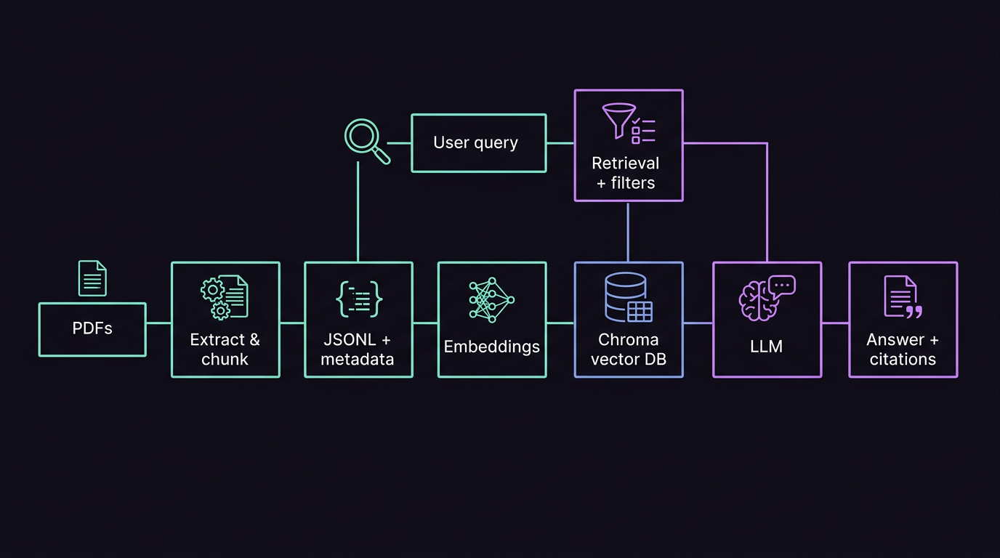
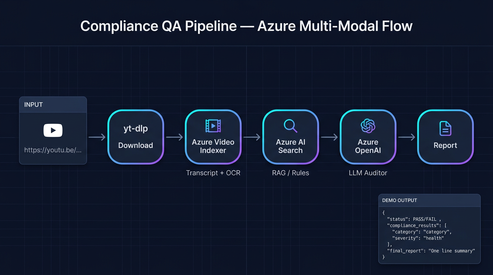

Intern
Excellon Software
React.js, React Native, +1 skill
Enterprise Knowledge Intelligence (RAG) · Compliance QA (Azure)
MTech @ COEP in Data Sciences · Aspiring ML Engineer · Skilled in ML, MLOps, and React Native · BTech in CS & IT
React.js, React Native, +1 skill
React.js, React Native
Service 1 · Enterprise Knowledge Intelligence
Python · RAG · Chroma · metadata filters · LLM synthesis
Metadata-aware retrieval over enterprise PDFs: extract and chunk text, embed into Chroma, filter by document metadata, retrieve top passages, then ground an LLM answer with explicit source citations.

Requires a deployed RAG API. Set ragApiBaseUrl in
js/config.js. Use a suggestion below or type your own question.
Service 2 · Compliance QA Pipeline
Paste a YouTube video URL. Set apiBaseUrl in
js/config.js to your deployed compliance API.
End-to-end flow from URL to structured compliance output.
